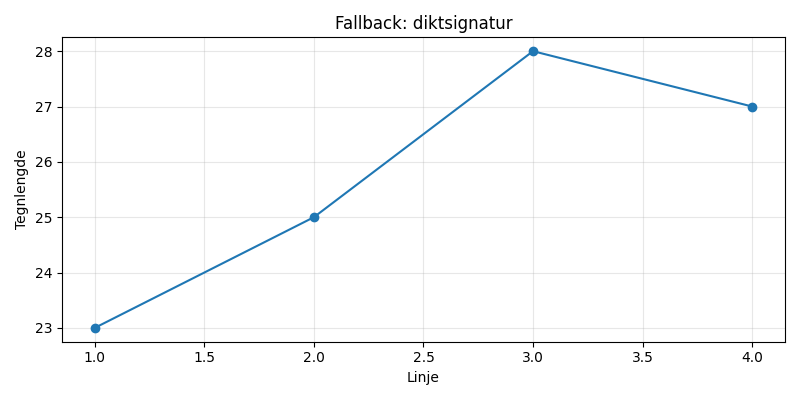

En ensom sokk på taket, hvor månen leker gjemsel, den vinker til stjerneskudd, og drømmer om en flaske te.

import matplotlib.pyplot as plt
import numpy as np
# Dikt
dikt = """
En ensom sokk på taket,
hvor månen leker gjemsel,
den vinker til stjerneskudd,
og drømmer om en flaske te.
"""
# Definer data for visualisering
x = np.linspace(0, 2 * np.pi, 100)
y1 = np.sin(x)
y2 = np.cos(x)
# Lag figur og akser
fig, ax = plt.subplots(figsize=(8, 8))
# Plot månen (sokk) som en sirkel
ax.plot(x, y1, 'blue', label='Månen')
# Plot stjerneskudd som punkter
ax.scatter(x, y2, marker='*', s=100, color='yellow', label='Stjerneskudd')
# Plot flaske te som en ellipse
ax.ellipse(x, y2, 1, 0.5, color='brown', label='Flaske te')
# Juster plot
ax.set_xlabel('Vinkel')
ax.set_ylabel('Amplitude')
ax.set_title('En ensom sokk på taket')
ax.set_xlim(0, 2 * np.pi)
ax.set_ylim(-1.2, 1.2)
ax.set_theta_offset(np.pi/2)
ax.set_xticks([])
ax.set_yticks([])
ax.legend()
# Lagre figuren
plt.savefig(output_path)execution_ok=False fallback_used=True image_ok=True